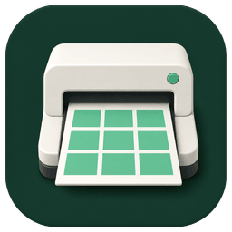

1. Ordine o lavoro veloce
Dai il nome del cliente e la cartella di esportazione lo riporta, oppure parti subito e scegli solo dove salvare.
Carichi decine o centinaia di foto, scegli il formato, controlli i ritagli ed esporti i file pronti per la stampa.

Dai il nome del cliente e la cartella di esportazione lo riporta, oppure parti subito e scegli solo dove salvare.
10×15, 13×18, 15×20, 20×30, A4, misura libera, Polaroid, Instax e Hi-Print. Più formati nello stesso lavoro.
È automatico e segue l'orientamento della foto. Correggi solo gli scatti che servono.
Una cartella per formato, JPG a 300 DPI, senza mai sovrascrivere i file esistenti.
La foto copre tutto il formato, oppure resta intera con il bianco intorno.
Imposti il bordino in millimetri e, se serve, il tuo logo sopra le stampe.
Indichi quante stampe vuoi di ogni scatto e vedi un avviso se la risoluzione è bassa.
Selezioni fino a 500 foto nell'anteprima della scheda SD e le apri in Print Flow. Lascia collegata la scheda fino all'esportazione: le foto restano sul tuo computer.
Print Flow prepara i file di stampa: non sostituisce il driver né il software della stampante.